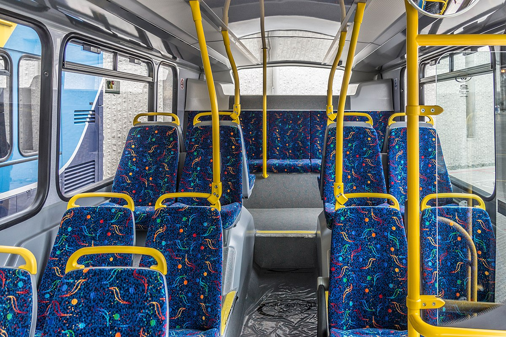
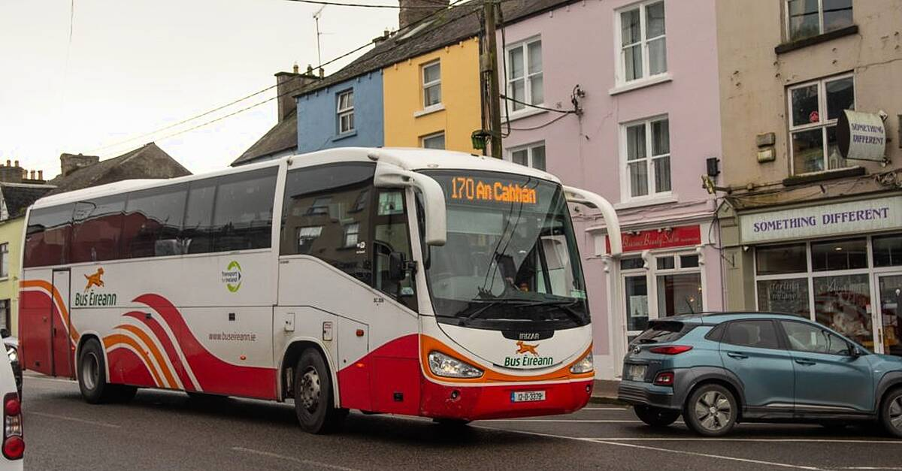
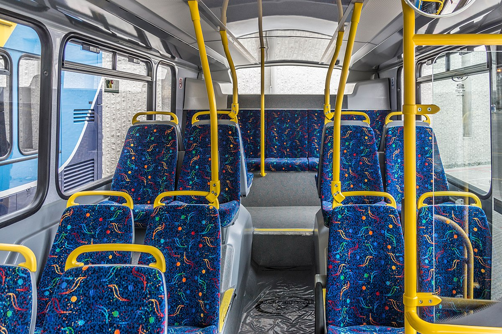

Comfortable Travel
We offer a comfortable, safe, and affordable travel experience with modern amenities. Our buses come equipped with air conditioning and free Wi-Fi.
Your trusted transport partner for travel within Sligo, including routes like Donegal to Sligo (S2).
At IreBus, we specialize in reliable and affordable bus services in and around Sligo. Our routes connect local towns and cities, including the popular Donegal to Sligo (S2) route. Whether you're commuting to work or planning a trip, we make your travel easy and stress-free.
We’re committed to providing the best service to our passengers, with modern buses, comfortable seating, and timely schedules. We prioritize customer satisfaction and are dedicated to keeping your travel experience smooth and enjoyable.
Are you looking for the most uncomfortable and unreliable transportation? Look no further! Our buses are a perfect example of everything you shouldn't want in a bus service. They’re always late, often breaking down, and never clean. But hey, at least you’ll have an adventure!
Who needs a smooth, stress-free ride when you can have a bus ride filled with delays, rude drivers, and crowded seats? At our company, we pride ourselves on providing the least enjoyable bus service in town. It’s a challenge, and we embrace it!
If you're still curious to learn more (or just curious about how bad we really are), click the link below:
Learn More About Our 'Great' BusesWe offer a comfortable, safe, and affordable travel experience with modern amenities. Our buses come equipped with air conditioning and free Wi-Fi.
Traveling around Sligo and beyond doesn't have to be expensive. Our competitive fares ensure you can explore the region without breaking the bank.

With buses running frequently, including the S2 route, you can rely on IreBus to get you where you need to go on time, every time.